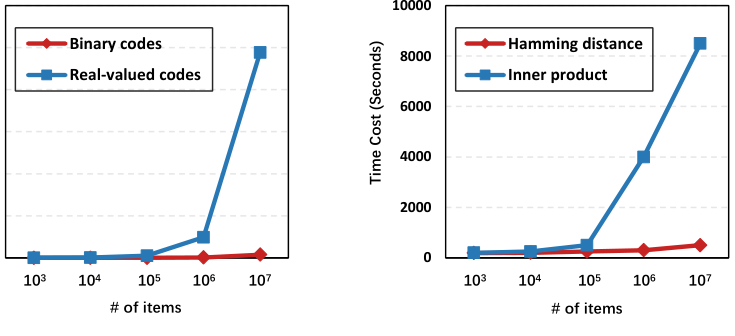
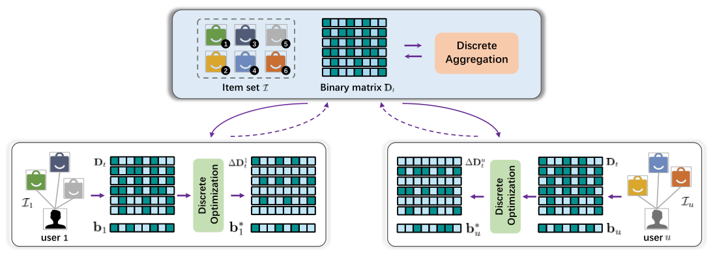

LightFR: Lightweight Federated Recommendation with Privacy-preserving Matrix Factorization（轻量隐私保护联邦矩阵分解推荐）
- 会议/期刊: ACM Transactions on Information Systems (TOIS)
- 作者与机构: Honglei Zhang, Fangyuan Luo, Jun Wu, Yidong Li（北京交通大学）；Xiangnan He（中国科学技术大学）
- 推荐链路定位: 召回（客户端 Top-K 向量检索）
- 研究方向: 去偏公平、可信隐私与工业架构 / 协同过滤与双塔召回
- 论文原文: https://arxiv.org/abs/2206.11743v2
- 开源代码: 暂未开源
TL;DR (1分钟核心速览)
联邦推荐（FRS）沿用实值嵌入内积检索，在物品规模上亿时，资源受限客户端的存储、通信与推理开销同步线性膨胀；同时实值梯度上传可被反演攻击还原评分。LightFR 将学习哈希引入联邦场景，把用户/物品表征压成 \(\{\pm1\}^f\) 二值码，用汉明相似度替代内积，并设计"本地离散坐标下降 + 服务器 sign 聚合"的联邦离散优化算法。在 4 个真实数据集、HR@10/NDCG@10 的采样排序协议下，相对最强联邦基线 PrivRec 提升 0.03%–0.67%，同时在 Ciao 上存储开销仅为 FCF 的 8%、推理速度快约 7 倍。
Background & Motivation (背景与核心矛盾)
- 主流范式: FCF/FedMF/FedRec 在客户端本地更新用户隐向量、在服务器聚合物品隐向量与梯度；MetaMF/PrivRec 用元学习或蒸馏压缩客户端模型规模。
- 前人局限 (一): 无论怎么压缩参数量，在线检索仍是连续欧氏空间的内积，候选集为全量物品时推理时间随 \(m\) 线性增长，元学习类方法（如 MetaMF 需前向传播）反而更慢。
- 前人局限 (二): 上传的是实值梯度/参数，FedMF 已证明两轮实值梯度可联立方程解出 \(r_{ui}\)；而加同态加密或差分隐私的方案又带来 1024 位密钥维度的存储与通信膨胀。
- 核心洞察 (Key Insight): 如图 1 所示，把 64 维实值码换成 64 位二值码后，存储/通信随物品数增长被压平，汉明距离可用 XOR+popcount 硬件指令完成，检索时间几乎与物品规模解耦。
- 本文切入点: 效率与隐私两个痛点的共同根源是"欧氏空间的实值重参数化"，因此换空间而非加补丁——直接在汉明空间学表征并做离散优化。

Method (核心方法设计)
1. 整体框架 (Overall Architecture)
服务器初始化全局物品二值矩阵 \(\mathbf{D}\in\{\pm1\}^{f\times m}\)；每轮按比例\(p\)采样客户端，下发最新\(\mathbf{D}\)。客户端本地先逐比特更新私有二值向量\(\boldsymbol{b}_u\)，再基于本地交互计算物品梯度矩阵\(\Delta\mathbf{D}_u\)上传；服务器执行 sign 聚合更新\(\mathbf{D}\)，进入下一轮。推理阶段客户端下载\(\mathbf{D}\)，用汉明相似度排序返回 Top-K。全流程只交换\(\pm1\) 比特，不上传原始评分与实值梯度。
flowchart TD
A["服务器初始化物品二值矩阵 D"] --> B["按比例 p 采样客户端并下发 D"]
B --> C["本地逐比特 DCD 更新用户二值向量 b_u"]
C --> D["本地计算物品梯度矩阵 ΔD_u 并上传"]
D --> E["服务器 sign 聚合梯度更新 D"]
E --> B
E --> F["收敛后客户端汉明相似度排序 Top-K"]
2. 关键设计拆解 (Key Designs)
-
汉明相似度重参数化 + 平衡约束（把"学表征"变成"学位"）：二值约束下常规 \(\|\mathbf{B}\|_F^2+\|\mathbf{D}\|_F^2\)退化为常数，无法抑制过拟合，也易出现比特坍缩。本文用比特一致率定义相似度并线性化为内积形式\(sim(\boldsymbol{b}_u,\boldsymbol{d}_i)=\frac{1}{2}+\frac{1}{2f}\boldsymbol{b}_u^{\top}\boldsymbol{d}_i\)，目标改为加权平方误差加比特平衡项： $\(\mathcal{L}=\sum_{u\in\mathcal{U}}\frac{|\mathcal{I}_u|}{N}\sum_{i\in\Omega_u}\left(r_{ui}-sim(\boldsymbol{b}_u,\boldsymbol{d}_i)\right)^2+\lambda\left(\Big\|\sum_u\boldsymbol{b}_u\Big\|^2+\Big\|\sum_i\boldsymbol{d}_i\Big\|^2\right),\ \text{s.t.}\ \boldsymbol{b}_u,\boldsymbol{d}_i\in\{\pm1\}^f .\)$ 直觉上平衡项最大化每比特的信息熵（每维正负各半），使 \(f\) 位码字容量被充分使用，这也是二值模型能逼近实值精度的关键。
-
联邦离散坐标下降（Local DCD，绕开两阶段量化损失）：直接对 \(\{\pm1\}^f\)做组合搜索是 NP-hard 的\(O(2^{(m+n)f})\)。作者采用交替优化：固定\(\boldsymbol{d}_i\)时，固定\(\boldsymbol{b}_u\)其余\(f-1\)位后，目标关于单比特\(\boldsymbol{b}_{uk}\) 是线性的，于是有闭式符号解 $\(b_{uk}=\mathrm{sign}\Big(\underbrace{\sum_{i\in\Omega_u}\tfrac{1}{f}\big(r_{ui}-\tfrac{1}{2}-\tfrac{1}{2f}\boldsymbol{d}_{i\bar{k}}^{\top}\boldsymbol{b}_{u\bar{k}}\big)d_{ik}}_{\text{本地残差信号}}-2\lambda\sum_{k'}b_{uk'}\Big),\)$ 其中 \(b_{uk}=0\) 时保持原位以避免震荡。相比"先学实值再 sign 阈值"的两阶段法，逐位直接优化避免了不可逆的量化误差累积。
-
梯度聚合与隐私、训练开销：客户端只上传逐比特梯度 \(\Delta d^{u}_{ik}=\big(r_{ui}-\frac{1}{2}-\frac{1}{2f}\boldsymbol{b}_{u\bar{k}}^{\top}\boldsymbol{d}_{i\bar{k}}\big)b_{uk}\)，服务器做\(\mathbf{D}=\mathrm{sign}\big(\frac{1}{f}\sum_u\Delta\mathbf{D}_u-2\lambda\mathbf{D}'\big)\)（Agg\(_{grad}\)），文中另给出直接聚合本地二值矩阵的变体 Agg\(_{para}\)。隐私直觉：FedMF 的实值反演需解出连续标量\(p_{uk}\)满足两轮方程，而\(\mathrm{sign}(\cdot)\)不可逆、不可微，服务器只能观测到比特翻转方向而非幅值，方程无解。整体训练复杂度\(O(T\cdot E\cdot f^2\cdot(|\Omega_u|+m))\)，对物品数线性、对客户端数可并行消除；冷启动用户/物品只需去掉平衡项按同一 DCD 在线微调，无需重训全局。
Experimental Setup & Evaluation Protocol (实验设置与评估协议)
- 数据集与预处理: 每用户按时间戳切分，无额外 k-core 过滤；用户即客户端。
| 数据集 | #Users | #Items | #Interactions | 密度 | 场景说明 |
|---|---|---|---|---|---|
| MovieLens-1M | 6,040 | 3,952 | 1,000,209 | 4.19% | 稠密，评分 1–5 |
| Filmtrust | 1,508 | 2,071 | 35,497 | 1.14% | 小规模，评分 0.5–4 |
| Douban-Movie | 2,964 | 39,695 | 894,888 | 0.76% | 中等物品池，人均 302 条 |
| Ciao | 7,375 | 105,096 | 282,619 | 0.04% | 极稀疏、最大物品池 |
- 数据划分与防穿越 (Splitting Strategy): 逐用户按时间戳排序后
80%/10%/10%比例划分（非 Leave-One-Out），验证/测试集不再泄漏未来交互。 - 排名评测协议 (Ranking Protocol):
Sampled Ranking——为每个正样本随机采样固定数量负样本后计算 HR@10 与 NDCG@10，非 Full-Ranking，故不同论文数值不可直接横向比较。 - 对比基线与超参: 集中式 PMF / SVD++ / DDL / NCF 与联邦式 FCF / FedMF / FedRec / MetaMF / PrivRec 共 9 个基线；实值模型 \(d=32\)、二值模型码长\(f=64\)；联邦侧全局轮\(T=50\)、本地 epoch\(E=1\)、客户端采样比\(p=0.6\)，超参按验证集调优。
Key Experimental Results (实验关键数据)
1. 主实验对比 (Main Results)
| 方法 | ML-1M HR@10 / NDCG@10 | Filmtrust | Douban | Ciao |
|---|---|---|---|---|
| PMF (集中式) | 0.5124 / 0.2768 | 0.8704 / 0.6610 | 0.3011 / 0.1678 | 0.4636 / 0.2434 |
| SVD++ (集中式) | 0.5291 / 0.2826 | 0.8793 / 0.6777 | 0.3118 / 0.1886 | 0.4692 / 0.2463 |
| NCF (集中式最优) | 0.5342 / 0.2901 | 0.8827 / 0.6907 | 0.3223 / 0.2097 | 0.4732 / 0.2513 |
| FCF | 0.4945 / 0.2625 | 0.8543 / 0.6376 | 0.2921 / 0.1615 | 0.4492 / 0.2304 |
| FedMF | 0.4836 / 0.2534 | 0.8601 / 0.6563 | 0.2786 / 0.1443 | 0.4461 / 0.2272 |
| FedRec | 0.4893 / 0.2612 | 0.8503 / 0.6304 | 0.2832 / 0.1593 | 0.4474 / 0.2301 |
| MetaMF | 0.4994 / 0.2691 | 0.8566 / 0.6389 | 0.2937 / 0.1669 | 0.4503 / 0.2402 |
| PrivRec | 0.4989 / 0.2688 | 0.8605 / 0.6563 | 0.2931 / 0.1666 | 0.4534 / 0.2411 |
| LightFR | 0.5014 / 0.2709 | 0.8615 / 0.6565 | 0.2934 / 0.1665 | 0.4556 / 0.2413 |
| Improv.% (vs 最强联邦) | +0.40 / +0.67 | +0.12 / +0.03 | −0.10 / −0.24 | +0.49 / +0.08 |
效率对比（Ciao 数据集，客户端侧，数值为相对 LightFR 的倍数，源自图 3）：存储开销 FCF/FedRec/PrivRec ≈12.5×、MetaMF ≈12.3×、FedMF ≈32×；推理时间 FCF/FedRec/PrivRec ≈7×、FedMF ≈30×、MetaMF ≈100×。通信开销趋势与存储一致，LightFR 只需传输 \(m\times f\)比特而非\(m\times f\times64\) 比特。
2. 消融与敏感性实验 (Ablation & Sensitivity)
原文消融小节在可得文本中被截断，具体数值未披露，下表仅保留可核实的设计维度与结论：
| 变体 / 维度 | 对照 | 原文结论 |
|---|---|---|
| Agg\(_{grad}\)（梯度聚合） | vs. Agg\(_{para}\)（参数聚合） | 两种聚合机制均被实现并对比，梯度聚合为默认主方案 |
| 去掉平衡约束 \(\lambda\) | vs. 完整模型 | 平衡项用于最大化比特熵、防止码字坍缩 |
| 逐位 DCD | vs. 两阶段 sign 阈值量化 | 直接离散优化规避量化损失 |
| 冷启动变体 | vs. 全量重训 | 去平衡项在线 DCD 即可近似最优，无需重训全模型 |
| 码长 \(f\)（图 4） | 不同\(f\) | 精度随码长增加而提升并趋于饱和 |
| 权衡参数 \(\lambda\)（图 5） | 不同\(\lambda\) | 在合理区间内性能平稳，不敏感 |
| 客户端采样比 \(p\)（图 6） | 不同\(p\) | 性能随\(p\) 增大而提升，但整体鲁棒 |
3. 关键实验发现 (Key Findings)
- "精度不掉队、开销降一档"是主卖点而非精度突破：LightFR 在 ML-1M/Filmtrust/Ciao 上 HR@10 相比最强联邦基线仅提升 0.12%–0.49%，但与集中式 NCF 仍差 2.1–3.3 个点（ML-1M 0.5014 vs. 0.5342，Filmtrust 0.8615 vs. 0.8827），说明二值化在联邦聚合噪声之上又叠加了一层量化损失，尚未被完全补偿。
- 收益随物品规模与稀疏度放大：在物品池 10.5 万、密度仅 0.04% 的 Ciao 上 LightFR 反超所有联邦基线（0.4556 vs. PrivRec 0.4534），推理快 7–100 倍；而在物品池 3.97 万的 Douban-Movie 上略低于 MetaMF（0.2934 vs. 0.2937），印证"汉明检索的优势来自候选集规模"这一动机。
- 效率增益可量化归因于比特运算替代浮点内积：存储仅为 FedMF 的 3.1%、MetaMF 的 8.1%、FCF/FedRec/PrivRec 的 8%，推理快 7–100 倍，即精度代价 < 1 个 HR 点、资源代价降低近一个数量级，这一 trade-off 在端侧部署中是可接受的。
Highlights & Limitations (亮点、对比与审稿批判)
- 与代表作对比 (vs. Prior Work): 与 FCF/FedRec 相比，本文不在欧氏空间做加密或虚拟填充，而是换到汉明空间，从根上移除实值上传通道；与 FedMF 相比，隐私不靠同态加密（1024 位密钥导致存储膨胀 32 倍），而靠 sign 的不可逆性；与 MetaMF/PrivRec 相比，压缩的是在线检索而非仅训练参数，因而推理时间真正下降。
- 可迁移亮点: ①"离散参数 + sign 聚合"这一模式可迁移到任何需要限制上传带宽的联邦/边缘推荐场景（如端侧广告粗排）；②闭式逐位 DCD 更新可直接套用到其他二值召回（RQ-VAE 码本、语义 ID）的码字精调。
- 审稿级局限批判: ①隐私仅有理论论证与三类情形的定性分析，缺少实测攻击（如梯度反演、成员推断）的成功率曲线，"理论上不可解"不等于"实践中安全"；②二值模型 \(f=64\)对比实值模型\(d=32\)，容量不同但存储比又被报为 8%，两套口径（每维 1 bit vs. 64 bit，及\(\times f\)差异）在文中未完全对齐，效率结论的归因需谨慎；③评测为采样排序而非 Full-Ranking，且逐用户 80/10/10 切分对二值码的冷启动鲁棒性检验偏弱；④精度增益普遍 < 0.7%，对超参\(f\)与\(\lambda\) 的实际选取成本缺乏报告。
Rating (四维评分)
- 方法创新性 (Novelty): ⭐⭐⭐⭐ （首次把学习哈希与联邦离散优化统一到 FRS，逐位闭式 DCD 解决了 \(\{\pm1\}^f\) 组合搜索难题）
- 评估协议与实验扎实度 (Protocol & Experiments): ⭐⭐⭐ （4 个不同规模数据集 + 9 个基线与三类效率指标齐全，但采样排序、消融数值缺失、无实测隐私攻击）
- 写作与数学规范度 (Clarity & Rigor): ⭐⭐⭐⭐ （汉明相似度线性化、逐位偏导推导与隐私三情形论证完整，复杂度分析清晰）
- 工业落地与复现价值 (Industrial & Practical Value): ⭐⭐⭐⭐ （比特级存储与 XOR 检索极易端侧部署，但未开源、冷启动依赖少量暖交互）